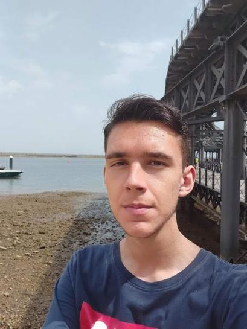

Sueño un mundo donde el ser humano utiliza la tecnología y no al revés. Sueño un mundo donde el sistema económico es un medio y la Declaración Universal de los Derechos Humanos su fin.
Confío en la sinergia entre ciencias y humanidades para llevarnos a un mundo mejor.
La ingeniería te da la visión holística de cómo funciona la tecnología que te rodea. A pesar de las dificultades que conlleva a veces, tiene tantos efectos positivos en la disciplina y en la forma de pensar que los beneficios de estudiar una ingeniería superan con creces a sus contras. Lo más importante que me llevo de esta etapa son las personas que me han acompañado. Amistades inolvidables que espero que sigan ahí por mucho tiempo.
Web del gradoDurante mucho tiempo pensaba dedicarme a la programación de software por vocación. Mi experiencia trabajando como freelancer en Upwork ha hecho que dude este futuro. Amo la programación pero también amo el proceso creativo y liberador que uno siente en proyectos open-source.
Leyendo artículos de Javier Garzas me he dado cuenta del grave intrusismo laboral que sufrimos los ingenieros e ingenieras en informática, y las consecuencias de ello en proyectos informáticos.
Por este motivo, quiero exclusivamente programar en proyectos open-source y no dedicarme profesionalmente a ello. Prefiero dedicarme a labores profesionales donde verdaderamente se valore nuestra ingeniería, como es el caso de la docencia o del peritaje informático.
También tengo deseo emprendedor: dono potencia informática a World Community Grid para realizar estudios sobre el cáncer, y me encantaría fundar una empresa bioinformática que lograra avances importantes en esta disciplina. Confío en la bioinformática para resolver muchos problemas que actualmente no podemos resolver.
En el futuro cercano, cuando finalice el grado, quiero dedicarme a la docencia universitaria. Siempre me ha gustado dar clases, ser profesor universitario es mi mayor sueño. Además, este año voy a comenzar a dar clases particulares de programación, y con ello, quiero hacer que mis alumnos se enamoren profundamente del arte de programar.
En el futuro lejano, cuando esté bien establecido en mi trabajo, quiero estudiar Física a distancia por la UNED. Leer libros de Michio Kaku o de Richard Feynmann ha despertado mi interés en la física. Actualmente tengo la visión de un ingeniero informático, y me gustaría tener también la visión de un físico.